Chapter 2.2.3 LibreOffice Impress¶
LibreOffice Impress is the program to present presentations on Denios-OS.
- Features include:
Built in themes
Spell check
PDF export
Images
Usage¶
When you open LibreOffice impress you will get a dialog to select a template with a preview select which one you want to use by left clicking and then click Open. If you want to search for a theme type into the Search towards the upper left. To not show the presentation template at startup uncheck the Show this dialog at startup checkbox. To add a title to a slide click where it says click to add title.
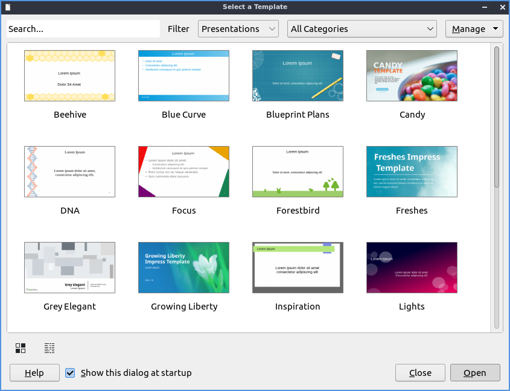To open a previous presentation you have been working on press the button that looks like a folder with a piece of paper in it and navigate to the file you want and open it or . To view your recently opened files press . To open a new presentation press Control + N or . To save your presentation press the button that looks like a floppy disk or . To save a new copy under a custom file name . To save a file as a PDF .

To type text into a presentation click in one of the boxes for your theme and type in the text with controls for the text on the right hand side. To insert a picture press the button with what looks like a photograph of a tree and select the file you want to insert or . To insert audio or video to your presentation and a file dialog will popup for you to pick a file. If you don’t want a music symbol to show on your presentation when presenting drag it outside the margins of the slide.
To add a new slide to your presentation press Control+M, right click on the side pane , or . To delete a slide , or right click on the slide in the side pane . To change the layout of your slide . To set an image as the background of your slide .
To move to the next slide press Page down, , or right click on a slide in the side pane . To move to your previous slide press Page up, , or right click on a slide in the side pane . To go to the first slide or right click on the slide in the side pane . To navigate to the last slide .
To apply a bold effects on your fonts select the text with the mouse and then press Control+ B or . To make text italic with first select it and then press Control + I or . To underline your text select it and then press Control+U or .
To increase your font size press Control + ] or . To decrease your font size press Control + [ or . To make text superscript select it and press Shift + Control +P or . To make text subscript select it and press Shift + Control + B or .
To spell check your presentation press F7 or . If you want to print your slides you can press Control + p or . To open up your printer settings . A dialog will pop up with different settings for your printer. To chose which printer to print to use the Printer drop down menu. To change which slides use the Range and Copies button group. To change what paper size you are printing change the Paper size field. To change which way the paper is printed on change the Orientation field. To the left in a sidebar is a preview of what you will print. To view what page you are on and how many pages is in the bottom left of the sidebar.
If you want to paste text into a slideshow press Control + V or . To copy text select it first and then press Control + C or . To cut text select it first and the press Control +X or . To paste text without formatting pres Control +Shift + Alt +V or . To select all text press Control+A or .
To insert a special character . To center your text press Control + E or . To have your text aligned to the right press Control +R or . To align text to the left press Control + L or .
To bring up a dialog to customize the character or your text or right click on a textbox and select from the context menu. The Family lets you choose the font family for your text. The Style is where you can select the of your font. The Size Lets you change the font size. The Font effects tab has even more effects for fonts. The drop down Font Label changes your font color. The Overlining menu lets you make a style for how to draw lines over the text. The Overline Color brings up a drop down menu to choose what color to draw a line over something.
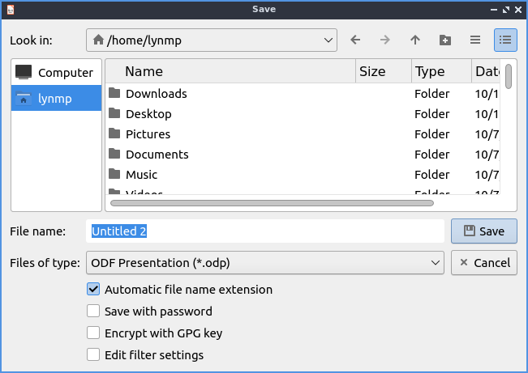The :guilabel:` Font Effects` tab has effects for your text. To have many different strikethrough effects to your text select the one you want from the dropdown Strikethrough menu. To change whether the font appears to be sunken or raised from the presentation use the menu for Relief. To choose how you want your text underlined choose an option from the Underlining menu. To change the color of your underline use the Underline color menu. To have effects with how your is vertically with the rest of the line select the Position tab. To make your text superscript press the Superscript button. To make your text subscript press the Subscript button. The menu for Scale width changes how much to scale the width of the font.
To format the paragraphs and spacing of text . The Indents & Spacing Tab has settings for indenting your text and the space between lines. To increase the indent right before the text starts increase the Before text field. To change the indentation after your text change the After text field. To have a different indent for your first line change the First Line filed. To change the amount of space above a paragraph change the Above paragraph field. To change the space below a paragraph change the Below paragraph field. To change the line spacing from this dialog window select the drop down menu Line Spacing. To reset your changes in this window press the Reset button. To not apply your changes press the Cancel button. To apply your changes and exit the window press the OK button.
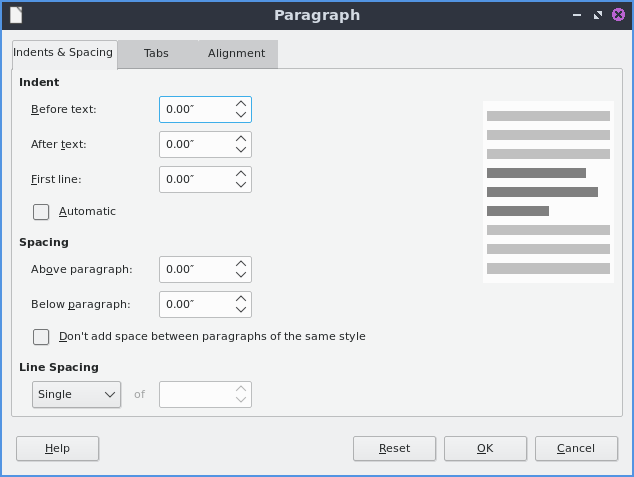To change settings on the alignment of text is on the Alignment tab. To choose which way you want your text aligned choose the Left, Right, Center, or Justified. To switch between left to right or right to left text switch the Text direction menu.
To toggle bulleted lists on your points . To toggle a numbered list for your points . To move an item up in list or press Shift + Alt + Up. To move an item down in a list or press Shift + Alt + Down.
To change your line spacing on your presentation and select the spacing you want. To increase your spacing between paragraphs . To decrease your spacing between paragraphs .
To move settings with a box of text left click on the border of the box of text. To move the text box click and drag on the border. To resize both vertical and horizontal size together left click on the corner and resize the text box. To resize how tall the text box is click the box at the top or bottom and drag to the desired size. To resize the horizontal size only select the box on a vertical size of the box.
To search for text press Control + F or to search for text. To move to the next search press the downward pointing arrow and for the previous press the upward pointing arrow. To toggle matching case check/uncheck the Match Case checkbox. To close the find searchbar press the Red X button. To change which To find and replace text press Control + H or . To move to the next result press the downward pointing arrow. To move to the previous result press the upward pointing arrow.
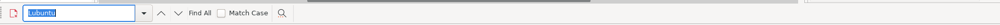To move a text box around you can left click on the text box and drag it to the desired position. To resize a text box click on the corner and drag to resize to the desired size.
To insert the number of your slide .
To change the zoom of you presentation to bring up a window to manage your zoom. If you just want to zoom to fit the page width . To change your zoom to 100 percent . In the bottom right corner there is a slider for controlling zoom. To zoom in move the slider to the right and to zoom out move the slider to the left.
To move a slide down . To move a slide up . To move a slide to the start . To move a slide to the end .
To view your slides right next to each other . To rearrange your slides click and hold a slide and drag the slide between the slides you want to move to. To have notes on each slide . Type your notes for each slide below the slide. To switch to an outline view of just text . To switch to an outline . To switch back to your normal view .
To change your view to grayscale . To view your presentation in black and white . To switch back to color view .
To quit LibreOffice impress press Control+Q.
Screenshot¶
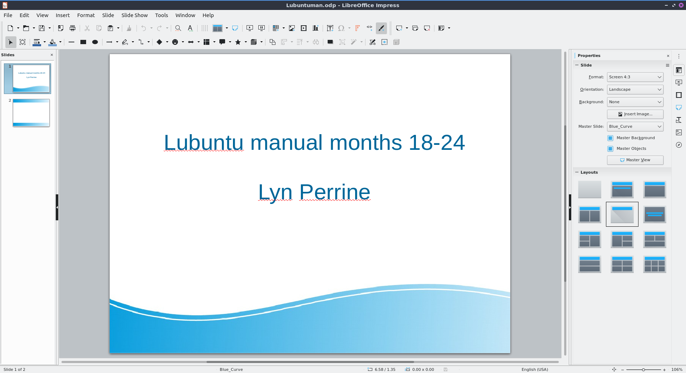Images¶
To insert an image click . To drag your image to where you want it left click and drag the mouse to where you want the image. To resize the image without distorting it click one of the boxes on the corner and resize to the size you wish. To move the image vertically which will distort it left click on the top or bottom boxes to resize the image vertically. To stretch your image horizontally to make it fit left click on the boxes on the left or right hand side to stretch your side. If you want to delete an image press Delete. To replace an image right click the image and will bring a file picker up to pick a new image. To crop an image right click on the image and select . To save an image out of a presentation right click on the image and select .
To rotate your image in LibreOffice impress right click on the picture . To rotate the image on the screen horizontally left click on the corner and drag the image to orientation you want. To leave the corners on the opposite side in the same place and move left click on the orange circle on the opposite side and rotate the image that way dragging to the desired position. To change the center of where you rotate click and drag the orange dot in the center. To flip your image vertically right click on the image and select . To flip your image horizontally right click on the image and select .
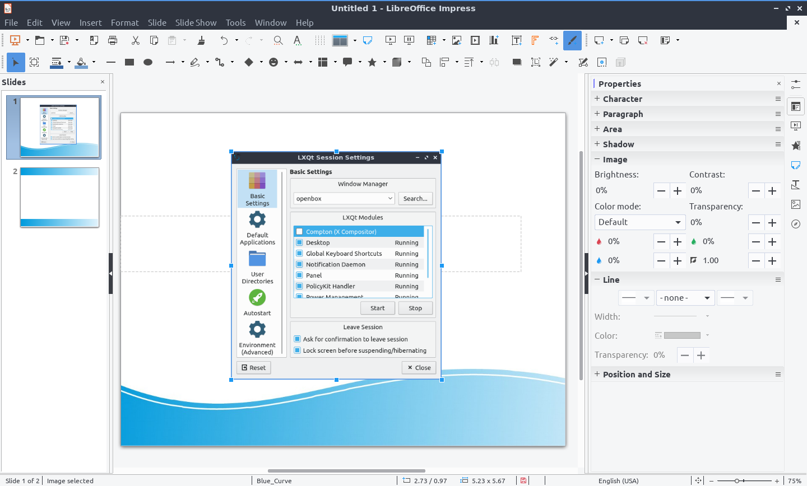To send your picture to the back like if you want to put text in front of it . To send your picture to the front right click on it and . To send an image behind one layer behind the other . To bring an image forward one layer right click the image .
Slide Customization¶
To bring up a dialog for the properties of your slides controlling background and shape with . To change the format for a different aspect ratio of projector or print format change the Format drop down menu. To select a custom width and height change the Width or Height. To switch to a portrait orientation press the Portrait button to the right of Orientation. To add margins to slides enter a margin in the Left, Right, Top, and Bottom. To change how slides are numbered change the Slide numbers field.
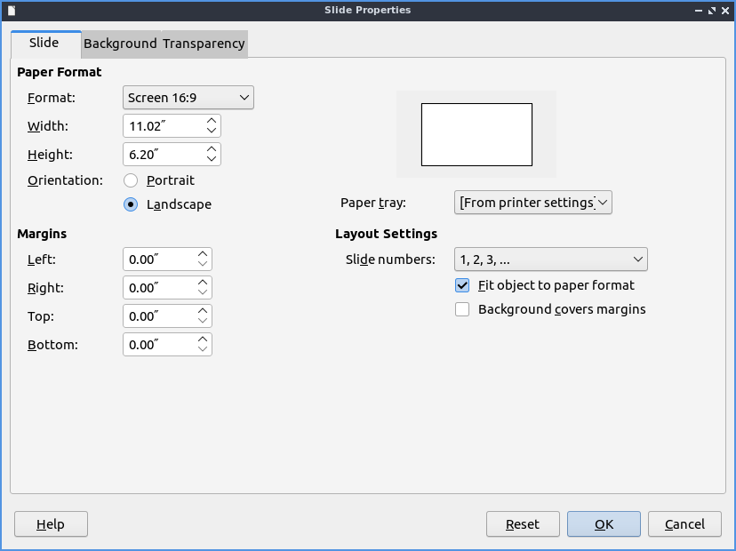To change and choose a custom background use the Background tab. To choose a solid color background for your slide press the Color button. To choose a different background color choose a color below the Color heading. To change to a different color pallet change the Palette drop down menu. To see what your current background color of the slide is shown under the Active label. To see what color you want to change is under New as a preview of the new background color. To the individual red, green, and blue of your colors change the R. G, and B fields respectively. To change the hexadecimal code for the color change the Hex field. To actually change the color press the OK button. To cancel your change of background use the Cancel button.
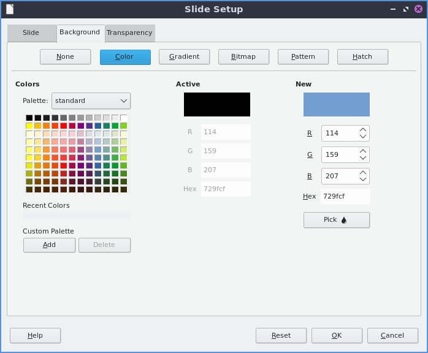To choose a smooth transition use the Gradient button. To choose a preset gradient left click on the gradient on Gradient menu. To change the type of gradient use the Type and select it from the drop down menu. To see a picture of your background it is under the Preview text. To switch to manually changing the number of steps in the gradient uncheck Automatic checkbox and then change the Increment field. To change the center of the gradient change the two fields for Center(X/Y) to change the X and Y coordinates of the center. To rotate the gradient use the Angle field. To change your first color of your gradient change the From Color drop down menu. To change the second color of the gradient change the To Color drop down menu. To change the opacity of either color change the field that is a Percent for changing opacity. To change where the color starts change the Border field.
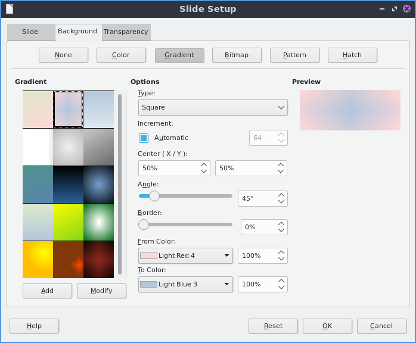To choose a bitmap image as your background use the Bitmap tab. The Bitmap to the left shows you the bitmap pictures you can choose. The Preview shows you what your background will look like. To change what the bitmap does if it does not fit perfectly use Style drop menu. To scale as a percent of the image press the Scale checkbox. To change the where to start the bitmap change the Position drop down menu.
To change to a geometric pattern for the background of your slide press the Pattern button. To select a preset pattern left click on a pattern under the Pattern heading. To preview your pattern view in under the text Preview. To change the foreground color of your pattern change the Foreground Color drop down menu. To change the background color of your pattern change the Background Color drop down menu. To customize your pattern by a grid left click on the grid under Pattern Editor.
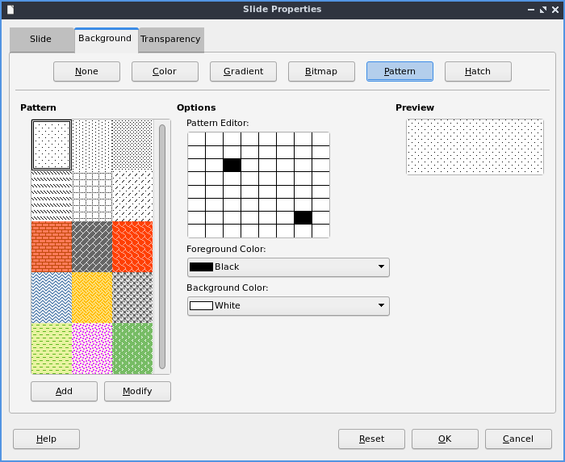To choose a series of lines as your background press the Hatch button. To change how far between each line change the Spacing field. To view what your background will look like it is under the Preview window. To rotate the lines change the Angle field or move the slider. To change the type of lines use the Line type drop down menu. To change the color of lines use the Line Color drop down menu. To choose a particular background color of your background check the Background Color checkbox. Then use the Background Color drop down menu to choose your background color.
To have your slides be transparent use the Transparency tab. To change your slides to be transparent click the Transparency button and to the right to change how transparent to make it.
Slideshows/Presentations¶
To start a slideshow press f5 or the button the looks like a TV with a triangle on it or To start a slideshow from the current slide press Shift + f5 or . To exit the slideshow press escape. To get to the next slide of the slideshow left click or press the right arrow key. to get to a previous slide in presentation mode press the left arrow key or right click previous. To move back to your first slide press the Home key. To move to your last slide press the End key.
To bring up custom settings for your settings . To change the presentation to in a window press the In a window button. To have the slideshow or presentation repeat afterwards press the Loop and repeat after:. To switch back to the default of having your presentation be fullscreen press the Full screen button. To change options on your presentation are under the Options heading. To toggle showing the mouse pointer check/uncheck the Mouse pointer visible checkbox. To toggle allowing animations check/uncheck the Animations allowed checkbox. To toggle changing slides by clicking with the mouse check/uncheck the Change slides by clicking on background checkbox. To toggle the presentation always on top check/uncheck the Presentation always on top checkbox.
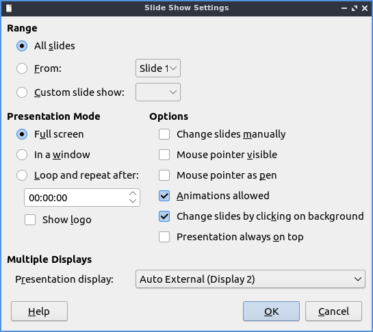Version¶
Denios-OS ships with version 7.4.2 of LibreOffice Impress.
How To Launch¶
To launch LibreOffice Impress go to the menu or run
loimpress
from the command line. The icon for LibreOffice Impress looks like a piece of paper with a red icon and a chart with bullet points on it.